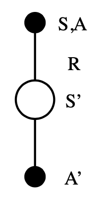
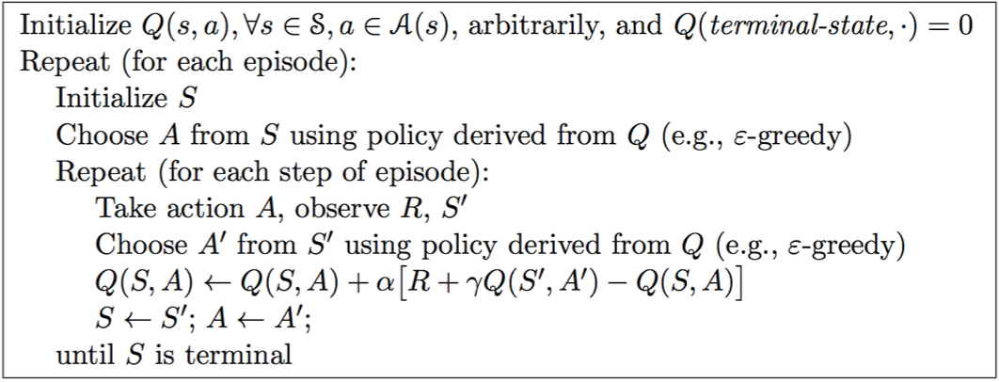
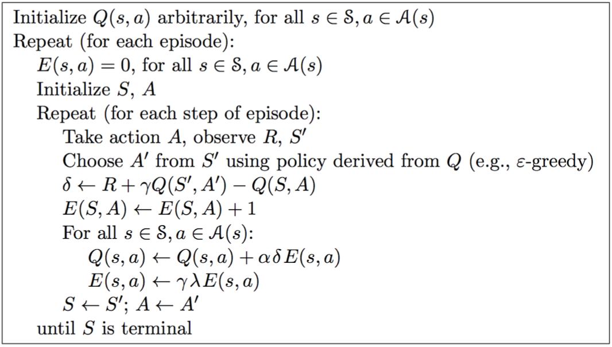
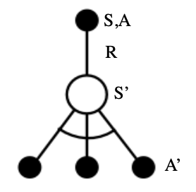
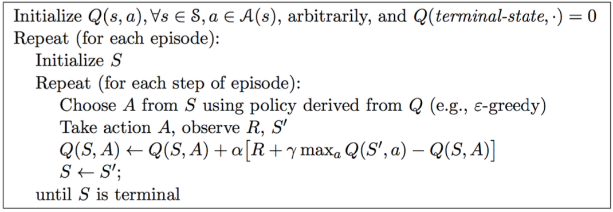
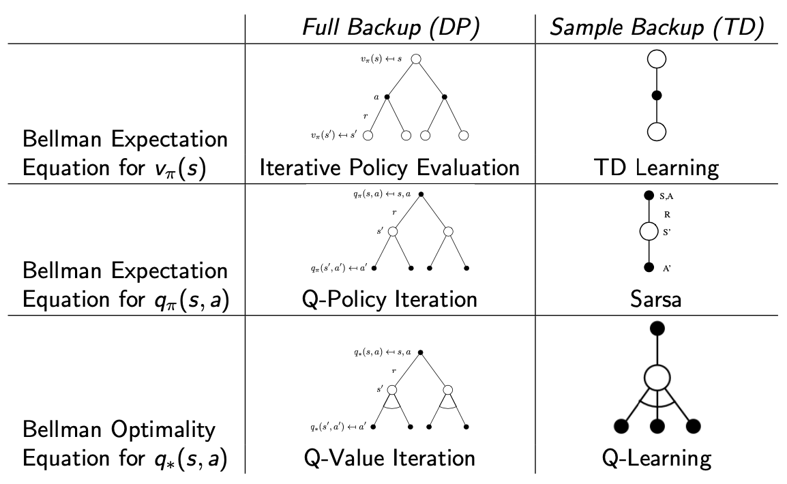
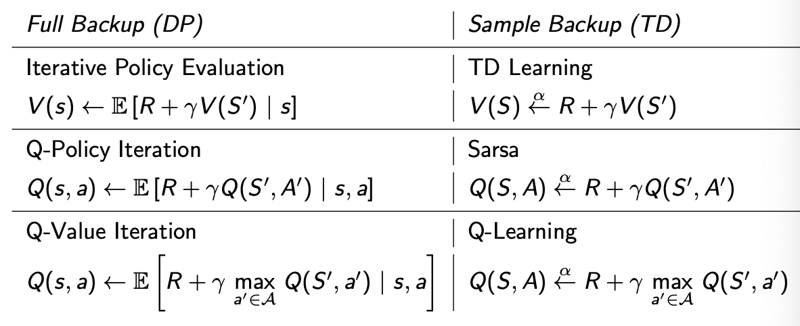

[David Silver强化学习]5·Model-Free Control
\[ \newcommand{\calA}{\mathcal A} \newcommand{\calP}{\mathcal P} \newcommand{\calR}{\mathcal R} \newcommand{\calS}{\mathcal S} \newcommand{\E}{\mathbb E} \]
1 Introduction
上一节课我们介绍了 model-free prediction，即如何在一个未知的 MDP（不知道转移矩阵 \(\calP\) 和 reward function 向量 \(\calR\)）中评价一个策略。我们学习了 Monte-Carlo Learning, Temporal-Difference Learning 和 \(\text{TD}(\lambda)\). 它们都基于采样，区别在于更新的步长——MC 要求采出的 episode 终止，\(\text{TD}(0)\) 每走一步就更新一次，而 \(\text{TD}(\lambda)\) 是它们的折中，为不同步长的结果做几何级数的系数加权。
这节课我们来学习 model-free control，即如何在未知的 MDP 中更新策略、最终找到最优策略。我们讲的方法可以归为三类：
- On-Policy Monte-Carlo Control
- On-Policy Temporal-Difference Learning
- Off-Policy Learning
那什么是 on-policy 和 off-policy 呢？前者指 agent 从自己的经验中学习，没有别人的参考；而后者参考其他 agent，甚至人类的行为，从他人的策略中采样，进而学习自己的策略。
2 On-Policy Monte-Carlo Control
2.1 Generalized Policy Iteration
回顾上上节课学的 policy iteration，我们使用 iterative policy evaluation 算法评估当前策略，然后根据新的 value function 贪心地更新策略，并不断迭代这个过程。

我们也提到过，使用任何一个策略评价方式和任何一个能够得到更优策略的更新方式，这个过程都是可行的。因此我们自然地想到，能不能直接把这个过程用在 model-free control 中呢？遗憾的是，有两个新的问题需要解决。
第一个问题出现在更新策略中，我们现有的贪心算法如下： \[ \pi'(s)=\arg\max_{a\in\calA} q(s,a)=\arg\max_{a\in\calA}\calR^a_s+\gamma\sum_{s'\in\calS}\calP^a_{ss'}V(s') \] 这里用到了 \(\calR\) 和 \(\calP\)，但是我们现在是 model-free 的，并不知道 \(\calR\) 和 \(\calP\) 啊！解决方法是使用 action-value function 的估计值 \(Q\) 而不是 state-value function 的估计值 \(V\)： \[ \pi'(s)=\arg\max_{a\in\calA}Q(s,a) \] 没错，使用 \(q\) 值是 DP 所不喜欢的（因为复杂度太高），但在这里我们不得不用它。
第二个问题来自于采样。和 DP 能遍历所有状态不同，贪心地采样很可能导致自己困在局部最优解出不去。换句话说，我们基本没有 exploration. 解决方法非常简单，称为 \(\epsilon\text{-greedy}\) exploration：假设一共有 \(m\) 个动作，我们有 \(1-\epsilon\) 的概率选择贪心策略，剩下 \(\epsilon\) 的概率随机选择策略，即： \[ \pi(a\mid s)=\begin{cases}\epsilon/m+1-\epsilon&\text{if }a=a^\ast=\arg\max_{a'\in\calA}Q(s,a')\\\epsilon/m&\text{otherwise}\end{cases} \] 为了说明 \(\epsilon\text{-greedy}\) 是确实能优化策略，我们需要证明 \(v_{\pi'}(s)\geq v_\pi(s)\)，同第三节课讲过的一样，只需证明 \(q_\pi(s,\pi'(s))\geq v_\pi(s)\). \[ \begin{align} q_{\pi}(s,\pi'(s))-v_\pi(s) &=\sum_{a\in\calA}\pi'(a\mid s)q_\pi(s,a)-\sum_{a\in\calA}\pi(a\mid s)q_\pi(s,a)\\ &=\epsilon/m\sum_{a\in\calA}q_\pi(s,a)+(1-\epsilon)\max_{a\in\calA}q_\pi(s,a)-\sum_{a\in\calA}\pi(a\mid s)q_\pi(s,a)\\ &=(1-\epsilon)\left[\max_{a\in\calA}q_\pi(s,a)-{\color{purple}{\sum_{a\in\calA}\frac{\pi(a\mid s)-\epsilon/m}{1-\epsilon}q_\pi(s,a)}}\right] \end{align} \] 由于 \[ \sum_{a\in\calA}\frac{\pi(a\mid s)-\epsilon/m}{1-\epsilon}=\frac{1}{1-\epsilon}\sum_{a\in\calA}\pi(a\mid s)-\frac{\epsilon}{1-\epsilon}=\frac{1}{1-\epsilon}-\frac{\epsilon}{1-\epsilon}=1 \] 所以紫色的一坨是对 \(q_\pi(s,a)\) 的加权求和，它一定不大于 \(\max_{a\in\calA}q_\pi(s,a)\)，因此 \(q_\pi(s,\pi'(s))\geq v_\pi(s)\).
解决了这两个问题，我们就得到了 generalized policy iteration（下左图）：


Monte-Carlo 方法理论上要采样很多 episodes，然后算平均、更新 value function；实操中一个效率更高的方式是采出一条 episode 之后就根据这条 episode 更新 value function（上右图）。
类似于梯度下降与随机梯度下降的区别。
2.2 GLIE
\(\epsilon\text{-greedy}\) 其实还带来了一个问题：我们的最终目标是找到最优策略 \(\pi^\ast\)，它应该是一个确定性策略，可是 \(\epsilon\text{-greedy}\) 给出的策略是随机性策略。这种随机性在学习初期是必要的，它保证我们能够去 explore；但是在我们已经找到最优策略之后，我们不希望还存在这种随机性。形式化地说，我们希望：
所有 state-action pairs 都能被无限次访问到： \[ \lim_{k\to\infty}N_k(s,a)=\infty \]
策略最终会收敛到贪心策略： \[ \lim_{k\to\infty}\pi_k(a\mid s)=\mathbf 1(a=\arg\max_{a'\in\calA}Q_k(s,a')) \]
这称为 GLIE (Greedy in the Limit with Infinite Exploration).
一个自然简单的想法是，随着学习的进行，逐步减小 \(\epsilon\)，譬如 \(\epsilon_k=1/k\). 步骤如下：
根据策略 \(\pi\) 采样出一条 episode（假设是第 \(k\) 条）：\(\{S_1,A_1,R_2,\ldots,S_T\}\sim \pi\)
对 episode 中的每一个 \(S_t\) 和 \(A_t\)， \[ \begin{align} &N(S_t,A_t)\gets N(S_t,A_t)+1\\ &Q(S_t,A_t)\gets Q(S_t,A_t)+\frac{1}{N(S_t,A_t)}(G_t-Q(S_t,A_t)) \end{align} \] 注意更新 \(Q\) 的方式是上一节课提到的增量（incremental）更新。
根据新的 \(Q\) 更新策略： \[ \begin{align} &\epsilon\gets 1/k\\ &\pi\gets\epsilon\text{-greedy}(Q) \end{align} \]
3 On-Policy Temporal-Difference Learning
正如我们上一节课的思路，鉴于 TD 对 MC 的优势，我们想从 MC Control 发展到 TD Control. 一个自然的做法是在迭代循环中用 TD 替代 MC，即：
- 使用 TD 评估 \(Q(S,A)\)
- 使用 \(\epsilon\text{-greedy}\) 更新策略
- 每走一步更新一次
3.1 Sarsa

从一个 state-action pair 开始，环境给出 reward \(R\) 和下一个 state \(S'\)，我们根据当前策略（对当前 \(Q\) 进行 \(\epsilon\text{-greedy}\) 得到）选择下一个 \(A'\)，随即更新 \(Q\)： \[ Q(S,A)\gets Q(S,A)+\alpha(R+\gamma Q(S',A')-Q(S,A)) \] Sarsa 名称的来源？再仔细看看上图 (doge)。
Algorithm:

Sarsa 的收敛性由以下定理保证：Sarsa 能收敛到最优的 action-value function，即 \(Q(s,a)\to q_\ast(s,a)\)，需要满足以下条件：
策略序列 \(\pi_t(a\mid s)\) 满足 GLIE
\(\alpha_t\) 序列满足 Robbins-Monro： \[ \sum_{t=1}^\infty a_t=\infty\quad\sum_{t=1}^\infty a_t^2<\infty \]
但是，David Silver 在课上说，实践中我们一般不会考虑第 2 个条件，甚至有时都不考虑第 1 个条件，Sarsa 依然能 work.
3.2 \(n\)-step Sarsa
可以看出，上述 Sarsa 过程对应着 \(\text{TD}(0)\)，那么相应的，我们可以得到对应 \(n\)-step TD 的 \(n\)-step Sarsa 和对应 \(\text{TD}(\lambda)\) 的 \(\text{Sarsa}(\lambda)\).
首先将 Sarsa 扩展到 \(n\)-step Sarsa：

定义 \(n\)-step Q-return： \[ q^{(n)}_t=R_{t+1}+\gamma R_{t+2}+\cdots+\gamma^{n-1}R_{t+n}+\gamma ^n Q(S_{t+n}) \] 那么 \(n\)-step Sarsa 的更新就是： \[ Q(S,A)\gets Q(S,A)+\alpha(q_t^{(n)}-Q(S,A)) \]
3.3 \(\text{Sarsa}(\lambda)\)
对 \(n\)-step Sarsa 做几何级数的加权求和，即是 \(\text{Sarsa}(\lambda)\). 同样的，我们有 forward view 和 backward view.
Forward view 要先把各 \(q_t^{(n)}\) 求出来，再做加权和，因此有着与 MC 一样的缺点：
 \[
\begin{align}
&q_t^\lambda=(1-\lambda)\sum_{n=1}^\infty\lambda^{n-1}q_t^{(n)}\\
&Q(S_t,A_t)\gets Q(S_t,A_t)+\alpha(q_t^\lambda-Q(S_t,A_t))
\end{align}
\] Backward view 使用 eligibility traces 避免了 forward view 的缺点，不过此时我们对每一个 state-action pair 都要存储一个 eligibility trace \(E_t(s,a)\)： \[
\begin{align}
&E_0(s,a)=0\\
&E_t(s,a)=\gamma\lambda E_{t-1}(s,a)+\mathbf 1(S_t=s,A_t=a)
\end{align}
\] 更新方式为： \[
\begin{align}
&\delta_t=R_{t+1}+\gamma Q(S_{t+1},A_{t+1})-Q(S_t,A_t)\\
&Q(s,a)\gets Q(s,a)+\alpha\delta_t E_t(s,a)
\end{align}
\] Algorithm:
\[
\begin{align}
&q_t^\lambda=(1-\lambda)\sum_{n=1}^\infty\lambda^{n-1}q_t^{(n)}\\
&Q(S_t,A_t)\gets Q(S_t,A_t)+\alpha(q_t^\lambda-Q(S_t,A_t))
\end{align}
\] Backward view 使用 eligibility traces 避免了 forward view 的缺点，不过此时我们对每一个 state-action pair 都要存储一个 eligibility trace \(E_t(s,a)\)： \[
\begin{align}
&E_0(s,a)=0\\
&E_t(s,a)=\gamma\lambda E_{t-1}(s,a)+\mathbf 1(S_t=s,A_t=a)
\end{align}
\] 更新方式为： \[
\begin{align}
&\delta_t=R_{t+1}+\gamma Q(S_{t+1},A_{t+1})-Q(S_t,A_t)\\
&Q(s,a)\gets Q(s,a)+\alpha\delta_t E_t(s,a)
\end{align}
\] Algorithm:

4 Off-Policy Learning
Off-policy learning 的基本思想是，根据一个策略 \(\mu(a\mid s)\) 进行采样，转而评估另一个策略 \(\pi(a\mid s)\). 因此我们称 \(\mu\) 为行为策略，而 \(\pi\) 为目标策略。这样做有几点好处：
- 从人类或其他 agent 处学习
- 重复利用以前的策略得到的经验
- 跟随一个具有探索性（exploratory）的策略，并随之学习到最优策略
- 跟随一个策略并随之学习到多个策略
4.1 Importance Sampling
一个简单的恒等变换，可以将对分布 \(P\) 求期望变换为对分布 \(Q\) 求期望，称作 importance sampling： \[ \begin{align} \E_{X\sim P}[f(X)]&=\sum_x P(x)f(x)\\ &=\sum_x Q(x)\frac{P(x)}{Q(x)}f(x)\\ &=\E_{X\sim Q}\left[\frac{P(X)}{Q(X)}f(X)\right] \end{align} \] 运用这种思想，在 Off-Policy Monte-Carlo 中，我们想从策略 \(\mu\) 采样来评估策略 \(\pi\)，那么可以如下计算 return： \[ G_t^{\pi/\mu}=\frac{\pi(A_t\mid S_t)}{\mu(A_t\mid S_t)}\frac{\pi(A_{t+1}\mid S_{t+1})}{\mu(A_{t+1}\mid S_{t+1})}\cdots\frac{\pi(A_T\mid S_T)}{\mu(A_T\mid S_T)}G_t \] 于是更新方式为： \[ V(S_t)\gets V(S_t)+\alpha\left({\color{purple}{G_t^{\pi/\mu}}}-V(S_t)\right) \] 然而，这个方法并不实用，因为它要求 \(\mu\neq0\)，并且多项连乘将导致极大的方差，极其不稳定。
更实用的是 Off-Policy TD，对 TD target 使用 importance sampling： \[ V(S_t)\gets V(S_t)+\alpha\left({\color{purple}{\frac{\pi(A_t\mid S_t)}{\mu(A_t\mid S_t)}\left(R_{t+1}+\gamma V(S_{t+1})\right)}}-V(S_t)\right) \]
4.2 Q-Learning
基本思想：上一节我们考虑了 state-value function \(V\) 的 off-policy learning，现在我们考虑 action-value function \(Q\) 的 off-policy learning. 实际上，其形式对应着 \(\text{Sarsa}(0)\)，只不过采样的策略换成了 \(\mu\) 而非 \(\pi\)：
下一个动作是从行为策略 \(\mu\) 中采样得来 \(A_{t+1}\sim\mu(\bullet\mid S_t)\)
但是我们考虑的是策略 \(\pi\) 中采样的动作 \(A'\sim\pi(\bullet\mid S_t)\)
更新 \(Q(S_t,A_t)\)： \[ Q(S_t,A_t)\gets Q(S_t,A_t)+\alpha({\color{purple}{R_{t+1}+\gamma Q(S_{t+1},A')}}-Q(S_t,A_t)) \]
注意，这里我们不必使用 importance sampling. 为什么呢？不知道！
上述思想带给我们一个好处：如果策略 \(\mu\) 和 \(\pi\) 都是可更新的，那么我们得以跟随一个随机的、具有探索性的行为策略 \(\mu\)，去优化一个确定性的、贪心的目标策略 \(\pi\)，从而解决我们在 on-policy learning 中遇到的一个棘手的问题——最优策略是确定性的，但是优化过程需要探索性。
具体而言，目标策略 \(\pi\) 是关于 \(Q(s,a)\) 的贪心策略： \[ \pi(s)=\arg\max_{a'\in\calA}Q(s,a') \] 而行为策略 \(\mu\) 是关于 \(Q(s,a)\) 的 \(\epsilon\text{-greedy}\) 策略。那么 Q-learning target 将简化为： \[ \begin{align} &R_{t+1}+\gamma Q(S_{t+1},A')\\ =&R_{t+1}+\gamma Q(S_{t+1},\arg\max_{a'}Q(S_{t+1},a'))\\ =&R_{t+1}+\gamma\max_{a'\in\calA}Q(S_{t+1},a') \end{align} \] 于是更新方式为： \[ Q(S,A)\gets Q(S,A)+\alpha(R+\gamma\max_{a'\in\calA} Q(S',a')-Q(S,A)) \] 这就是 Q-Learning.
对比 Sarsa：\(Q(S,A)\gets Q(S,A)+\alpha(R+\gamma Q(S',A')-Q(S,A))\)，可见 Q-Learning 和 Sarsa 的唯一区别只在于将 TD target 中的 \(Q(S',A')\) 替换为了 \(\arg\max_{a'\in\calA}Q(S',a')\)，也就是说，在更新时不再是随便从当前策略中采样一个动作，而是选出具有最大 \(Q\) 值的那个动作，如下图所示：

Algorithm：

5 小结·DP 与 TD
通过这几节课的学习，我们已经发现许多算法之间具有对应和发展的关系，这里，我们将 DP 和 TD 的算法总结如下表：


其中，\(x\overset{\alpha}{\gets}y\equiv x\gets x+\alpha(y-x)\)，表示用 \(y\) 来更新 \(x\).